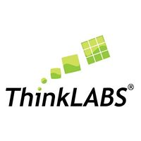

About¶
Figure
Welcome! I'm Akshay Malige, a physicist and FPGA/ML hardware engineer. I build detector readout electronics, FPGA-based data acquisition systems and accelerate ML algoritms on edge platforms for high-energy physics experiments, with contributions across DUNE, ATLAS, HADES, PANDA, and GRAMS. I specialize in VHDL, HLS, hls4ml, Alveo and Versal ACAP platforms, with 40+ peer-reviewed publications.
Currently, I am a Post-doctoral Research Associate at Brookhaven National Laboratory working on ATLAS Event Filter tracking (ML on Xilinx Alveo) and a Versal ACAP based real-time (μs–s) feature extraction system.
Links: CV / Google Scholar / GitHub / LinkedIn / Email
Snapshot¶
- Current: Postdoctoral Research Associate, Brookhaven National Laboratory
- Focus: FPGA DAQ, low-latency ML inference, Versal AIE-ML / Alveo platforms
- Location: Long Island, NY
- Email: amalige@bnl.gov
Work Experience¶
Working on FPGA-based ML for ATLAS Event Filter tracking and prototyping real-time alignment workflows on Versal ACAP.
- Implementing low-latency inference with HLS and hls4ml on Xilinx Alveo and AMD Versal devices.
- Building a proof-of-concept alignment pipeline spanning AI Engine tiles, programmable logic, and the ARM processing system (VEK280).
Developed FPGA firmware and ML acceleration pipelines for neutrino experiments and supported the GRAMS TPC readout effort.
- Implemented real-time data compression and anomaly detection on FPGA for DUNE and MicroBooNE workflows.
- Served as technical coordinator for NASA-APRA GRAMS, supporting design reviews and multi-institution integration of the FPGA-based readout system.
Developed and verified FPGA logic for HVDC converter control systems.
- Wrote VHDL modules and testbenches for control and protection functions.
- Ran timing analysis and verification to support integration into converter control hardware.
Worked on real-time DAQ and detector prototyping for HADES and PANDA tracking systems.
- Developed data filtering and trigger logic modules and interfaced detector electronics with the readout framework.
- Built and tested a PANDA straw tube tracker prototype, including front-end signal processing and calibration for beam tests.
- Implemented remote control and monitoring tools for HADES detector subsystems to support stable operation during runs.

Delivered STEM workshops across India for instructors and students, covering basic electronics, robotics, and physics experiments.
- Reached 100+ instructors and 1000+ students through hands-on training sessions.
- Developed curriculum and trained instructors in science communication and demonstration techniques.
Education¶
Thesis: "Read-out and online data processing for the Forward Tracker in HADES and PANDA." Focused on FPGA-based DAQ and real-time processing. PDF
Thesis: "Influence of short-wave and long-wave radiation on local weather."
Research Projects¶
- Real-time Alignment on Versal ACAP (BNL LDRD, 2025)
Heterogeneous pipeline on AMD Versal VEK280 (AI Engine + PL + PS) for on-the-fly detector alignment and calibration. Links: Talk / Poster - ATLAS ML Trigger (2024 - Present)
HLS/hls4ml kernels on Xilinx Alveo U250 for Event Filter tracking; optimized for latency and throughput. Migration of the Event Filter tracking pipeline to Versal VCK190, VEK280, VP1552 platforms (from data-center card to embedded accel). - FPGA Accelerated Trigger for DUNE (2023)
Implemented 2D CNN-based trigger and feature extraction firmware for large-scale neutrino detectors. - Anomaly Detection on FPGA (2023)
Autoencoder-based data quality monitoring on Xilinx Alveo boards for streaming liquid argon TPC data. Links: Paper (arXiv) / Code (GitHub) - GRAMS TPC Readout (2023)
Lead for FPGA DAQ, slow control, and system integration for the balloon-borne gamma-ray experiment. - PANDA Straw Tracker DAQ (2019 - 2022)
FPGA readout, online processing, and calibration for PANDA straw tube tracker (Ph.D. thesis). Link: Thesis (PDF)
Conference Presentations & Workshops¶
- Connecting the Dots (CTD 2025), University of Tokyo, Nov 10-14, 2025 — Talk: "Real time inference on heterogeneous devices for detector calibration." Talk / Event
- ACAT 2025, University of Hamburg, Sep 8-12, 2025 — Poster: "Accelerating Detector Alignment Calibration with Real-Time Machine Learning on Versal ACAP Devices." Poster / Event
- US ATLAS HLS Education and Development (AHEAD) Bootcamp, Brookhaven National Lab, June 9–13, 2025 — Co-organizer; developed FPGA HLS training materials and instructed 30+ participants. Event / Tutorial page
- European AI for Fundamental Physics Conference (EuCAIFCon), Amsterdam, Apr 30 – May 3, 2024 — Poster presenter on FPGA-based anomaly detection. Contribution
- Neutrino Physics and Machine Learning Workshop, Tufts University, Aug 22-25, 2023. Event
- Xilinx Adaptive Compute Ph.D. School, ETH Zurich, Jan 24-28, 2022.
- FAIRNESS 2019 (Arenzano), MESON 2018 (Krakow), and earlier conferences.
Selected Publications¶
Real-time Anomaly Detection for Liquid Argon Time Projection Chambers
Chung, Seokju, Cleeve, Jack, Malige, Akshay, Karagiorgi, Georgia, Gerlach, Lino, Pol, Adrian A., Ojalvo, Isobel
arXiv preprint arXiv:2509.21817, 2025
arXiv
Comparison of readout systems for high-rate silicon photomultiplier applications
Wong, M. L., Kołodziej, M., Briggl, K., Hetzel, R., Korcyl, G., Lalik, R., Malige, A.
Journal of Instrumentation, 2024
Journal
Read-out and online processing for the Forward Tracker in HADES and PANDA
Malige, Akshay
Jagiellonian University, 2023
Production tests of front-end electronics for Straw Tube Trackers in HADES and PANDA experiments at FAIR
Firlej, Mirosł
Journal of Instrumentation, 2023
Journal
Real-Time Data Processing Pipeline for Trigger Readout Board-Based Data Acquisition Systems
Malige, A., Korcyl, G., Firlej, M., Fiutowski, T., Idzik, M., Korzeniak, B., Lalik, R.
IEEE Transactions on Nuclear Science, 2022
Journal
Hyperon studies and development of forward tracker for hades detector
Rathod, Narendra, Lalik, Rafał
arXiv preprint arXiv:2004.09387, 2020
arXiv
Measurement of signal-to-noise ratio in straw tube detectors for PANDA forward tracker
Rathod, Narendra, Smyrski, Jerzy, Malige, Akshay
Basic Concepts in Nuclear Physics: Theory, Experiments and Applications, 2019
Skills¶
- Hardware/HDL: FPGA design (VHDL/Verilog), RTL logic, high-speed serial links, timing closure, PCB schematic capture.
- HLS/ML: Vivado HLS, Vitis HLS, hls4ml, AI Engine (AIE, AIE-ML), DPU.
- Platforms: Xilinx Alveo U55c/U250/U280, Versal VEK280, VCK190, VP1552, PYNQ-Z2, ZCU104, ZCU102, KU15P, Lattice ECP3/ECP5.
- Software: Python, C/C++, MATLAB, Bash, Git, Linux, ROOT, Docker.
- Frameworks/Tools: PyTorch, TensorFlow, PYNQ, OpenCAPI, XRT, Vitis AI; Vivado, Vitis, ModelSim, HLS Profiler, Vitis Analyzer, Lattice Diamond, Quartus.
- Languages: English (fluent), Hindi (advanced), Kannada (native), basic Polish.
Honors & Grants¶
- POLONEZ Postdoctoral Fellowship - National Science Centre (Poland), Hyperon production studies (2016/23/P/ST2/04066).
- Marie Sklodowska-Curie COFUND Fellowship (contributing researcher) - EU Horizon 2020 (Grant 665778).
- University Research Grants - Jagiellonian University (MNS Grants for Young Scientists, 2019 and 2020).
- Outstanding Working Group Award - PANDA@HADES Collaboration (2022) for tracking and readout development.